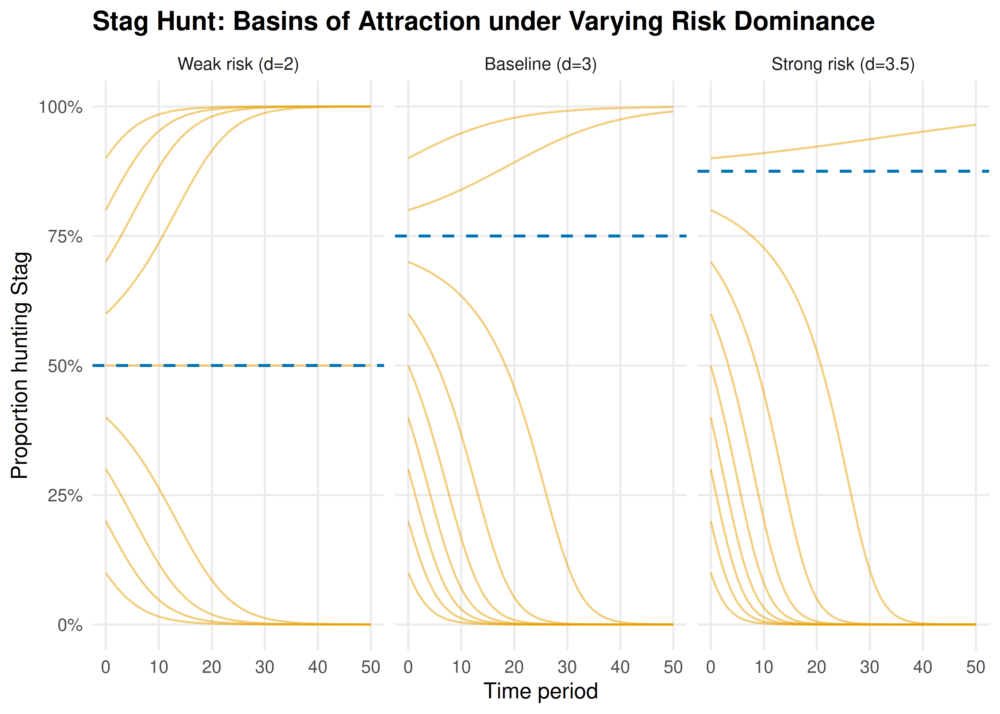
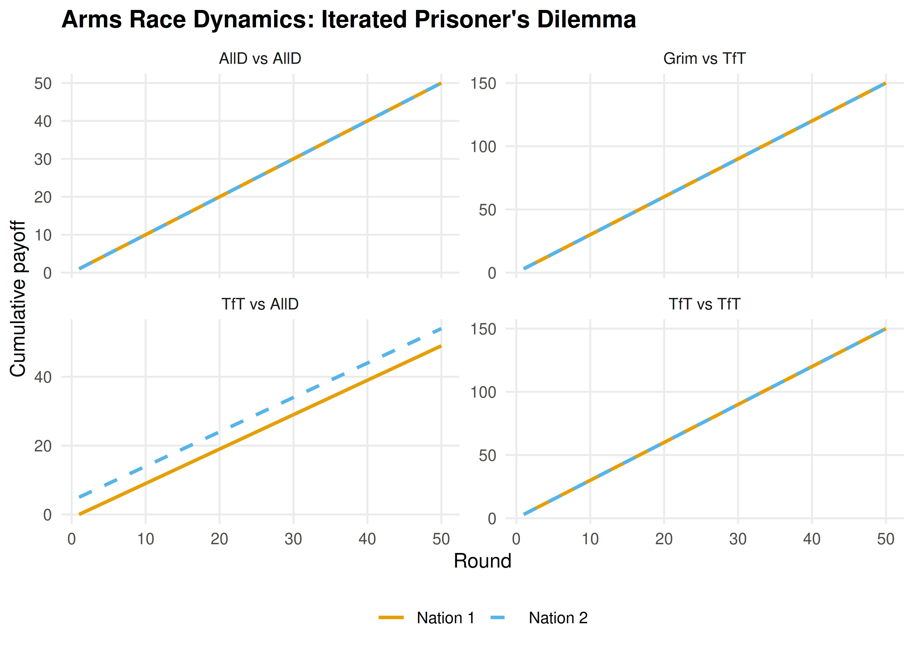

36 Conflict and Cooperation Models
Applying game theory to international relations and social dilemmas — Chicken, Stag Hunt, Schelling focal points, and arms race dynamics.
Learning objectives
- Formulate the Chicken game and Stag Hunt as strategic-form games, and identify their Nash equilibria.
- Explain Schelling focal points and why coordination can succeed without communication.
- Model an arms race as an iterated Prisoner’s Dilemma and analyze how strategy choice affects long-run payoffs.
- Simulate cooperation and defection dynamics under varying risk-dominance conditions in R.
36.1 Motivation
In October 1962, the United States and the Soviet Union stood at the brink of nuclear war during the Cuban Missile Crisis. Each side could escalate (hold firm) or back down (accommodate). Mutual escalation risked catastrophe; mutual accommodation preserved the status quo. But each side preferred the other to back down first.
This scenario has the structure of the Chicken game, one of several canonical models that game theory uses to study conflict and cooperation. Alongside Stag Hunt (coordination under risk) and the iterated Prisoner’s Dilemma (arms races), these models illuminate when cooperation emerges, when it collapses, and what institutional features sustain it.
36.2 Theory
36.2.1 The Chicken game
In Chicken, two players simultaneously choose to Swerve (cooperate) or Drive Straight (defect). The payoff structure is:
| Swerve | Straight | |
|---|---|---|
| Swerve | \((3, 3)\) | \((2, 4)\) |
| Straight | \((4, 2)\) | \((0, 0)\) |
Mutual defection (Straight, Straight) is the worst outcome for both — a “crash.” The game has two pure-strategy Nash equilibria: (Swerve, Straight) and (Straight, Swerve), plus a mixed equilibrium. Unlike the Prisoner’s Dilemma, mutual defection is not an equilibrium.
36.2.2 Stag Hunt
In Stag Hunt, two hunters choose to hunt Stag (cooperate) or hunt Hare (defect). Hunting stag requires coordination; a lone stag hunter gets nothing.
| Stag | Hare | |
|---|---|---|
| Stag | \((4, 4)\) | \((0, 3)\) |
| Hare | \((3, 0)\) | \((3, 3)\) |
The game has two pure-strategy NE: (Stag, Stag) is payoff-dominant (both prefer it) while (Hare, Hare) is risk-dominant (safer against uncertainty). The mixed NE has each player hunting Stag with probability \(p^* = 3/4\). The tension between payoff dominance and risk dominance is central to coordination problems.
Definition: Risk Dominance
In a \(2 \times 2\) game with two pure-strategy NE, equilibrium \((a_1, a_2)\) risk-dominates \((b_1, b_2)\) if the product of deviation losses is larger:
\[ (u_1(a_1,a_2) - u_1(b_1,a_2))(u_2(a_1,a_2) - u_2(a_1,b_2)) > (u_1(b_1,b_2) - u_1(a_1,b_2))(u_2(b_1,b_2) - u_2(b_1,a_2)) \]
36.2.3 Schelling focal points
Schelling (1960) observed that players often coordinate successfully by choosing options that are culturally or contextually prominent — focal points. When asked to meet in New York without specifying a location, most people choose Grand Central Station at noon. Focal points operate outside the formal game structure but resolve the equilibrium selection problem in practice.
36.2.4 Arms race as iterated Prisoner’s Dilemma
An arms race between two nations can be modeled as a repeated Prisoner’s Dilemma. In each period, each nation chooses to Arm (defect) or Disarm (cooperate). The stage-game payoffs reflect that mutual disarmament is efficient, but each side has a unilateral incentive to arm. Over many rounds, strategies like Tit-for-Tat can sustain cooperation, but sufficiently hawkish strategies or finite horizons can trigger arms races.
36.3 Implementation in R
36.3.1 Stag Hunt dynamics under varying risk dominance
simulate_stag_hunt <- function(a, b, c_val, d_val, n_pop = 100,
n_periods = 50, p0_seq = seq(0.05, 0.95, by = 0.05)) {
# Payoffs: Stag/Stag=a, Stag/Hare=b, Hare/Stag=c, Hare/Hare=d
# Replicator dynamics: dp/dt = p(1-p)[EU(Stag) - EU(Hare)]
# EU(Stag) = p*a + (1-p)*b, EU(Hare) = p*c + (1-p)*d
results <- map_dfr(p0_seq, function(p0) {
p <- p0
trajectory <- tibble(t = 0, p_stag = p, p0 = p0)
for (t_step in seq_len(n_periods)) {
eu_stag <- p * a + (1 - p) * b
eu_hare <- p * c_val + (1 - p) * d_val
dp <- p * (1 - p) * (eu_stag - eu_hare)
p <- max(0, min(1, p + dp * 0.1)) # Euler step
trajectory <- bind_rows(trajectory,
tibble(t = t_step, p_stag = p, p0 = p0))
}
trajectory
})
results
}
# Baseline Stag Hunt: a=4, b=0, c=3, d=3
stag_dynamics <- simulate_stag_hunt(a = 4, b = 0, c_val = 3, d_val = 3)
# Mixed NE threshold: p* = (d - b) / (a - c - b + d) = 3/4
p_star <- 3 / 4
cat(sprintf("Stag Hunt mixed NE threshold: p* = %.2f\n", p_star))#> Stag Hunt mixed NE threshold: p* = 0.75
cat("Populations starting above p* converge to (Stag, Stag).\n")#> Populations starting above p* converge to (Stag, Stag).
cat("Populations starting below p* converge to (Hare, Hare).\n")#> Populations starting below p* converge to (Hare, Hare).36.3.2 Phase diagram: cooperation vs. defection basins
# Three regimes: vary d (safe payoff) to shift risk dominance
regimes <- tibble(
d_val = c(2, 3, 3.5),
label = c("Weak risk (d=2)", "Baseline (d=3)", "Strong risk (d=3.5)")
)
phase_data <- map_dfr(seq_len(nrow(regimes)), function(i) {
dyn <- simulate_stag_hunt(a = 4, b = 0, c_val = regimes$d_val[i],
d_val = regimes$d_val[i],
p0_seq = seq(0.1, 0.9, by = 0.1))
dyn$regime <- regimes$label[i]
dyn$p_star <- (regimes$d_val[i] - 0) / (4 - regimes$d_val[i] - 0 + regimes$d_val[i])
dyn
})
phase_data$regime <- factor(phase_data$regime, levels = regimes$label)
p_phase <- ggplot(phase_data, aes(x = t, y = p_stag, group = p0)) +
geom_line(colour = okabe_ito[1], alpha = 0.5, linewidth = 0.5) +
geom_hline(aes(yintercept = p_star), linetype = "dashed",
colour = okabe_ito[5], linewidth = 0.7) +
facet_wrap(~ regime, ncol = 3) +
scale_x_continuous(name = "Time period") +
scale_y_continuous(name = "Proportion hunting Stag",
limits = c(0, 1), labels = scales::percent) +
theme_publication() +
labs(title = "Stag Hunt: Basins of Attraction under Varying Risk Dominance")
p_phase
Figure 36.1: Phase diagram of Stag Hunt replicator dynamics under three risk-dominance regimes. Each curve is one trajectory starting from a different initial proportion of Stag hunters. The dashed line marks the mixed-NE threshold separating the basins of attraction.
save_pub_fig(p_phase, "stag-hunt-basins", width = 7, height = 5)36.3.3 Arms race simulation
simulate_arms_race <- function(strategy1, strategy2, n_rounds = 50,
payoffs = list(CC = c(3, 3), CD = c(0, 5),
DC = c(5, 0), DD = c(1, 1))) {
# strategy: function(own_history, opp_history) -> "C" or "D"
h1 <- character(0)
h2 <- character(0)
results <- tibble(round = integer(), a1 = character(), a2 = character(),
pay1 = numeric(), pay2 = numeric())
for (r in seq_len(n_rounds)) {
a1 <- strategy1(h1, h2)
a2 <- strategy2(h2, h1)
key <- paste0(a1, a2)
pay <- payoffs[[key]]
results <- bind_rows(results,
tibble(round = r, a1 = a1, a2 = a2,
pay1 = pay[1], pay2 = pay[2]))
h1 <- c(h1, a1)
h2 <- c(h2, a2)
}
results |> mutate(cum_pay1 = cumsum(pay1), cum_pay2 = cumsum(pay2))
}
# Define strategies
always_defect <- function(own, opp) "D"
always_cooperate <- function(own, opp) "C"
tit_for_tat <- function(own, opp) if (length(opp) == 0) "C" else tail(opp, 1)
grim_trigger <- function(own, opp) if (any(opp == "D")) "D" else "C"
matchups <- list(
list(s1 = tit_for_tat, s2 = tit_for_tat, name = "TfT vs TfT"),
list(s1 = always_defect, s2 = always_defect, name = "AllD vs AllD"),
list(s1 = tit_for_tat, s2 = always_defect, name = "TfT vs AllD"),
list(s1 = grim_trigger, s2 = tit_for_tat, name = "Grim vs TfT")
)
arms_data <- map_dfr(matchups, function(m) {
sim <- simulate_arms_race(m$s1, m$s2, n_rounds = 50)
bind_rows(
sim |> select(round, cumulative = cum_pay1) |>
mutate(player = "Nation 1", matchup = m$name),
sim |> select(round, cumulative = cum_pay2) |>
mutate(player = "Nation 2", matchup = m$name)
)
})
p_arms <- ggplot(arms_data, aes(x = round, y = cumulative,
colour = player, linetype = player)) +
geom_line(linewidth = 0.9) +
facet_wrap(~ matchup, ncol = 2, scales = "free_y") +
scale_colour_manual(values = okabe_ito[c(1, 2)], name = NULL) +
scale_linetype_manual(values = c("solid", "dashed"), name = NULL) +
scale_x_continuous(name = "Round") +
scale_y_continuous(name = "Cumulative payoff") +
theme_publication() +
labs(title = "Arms Race Dynamics: Iterated Prisoner's Dilemma")
p_arms
Figure 36.2: Cumulative payoffs over 50 rounds of an arms race (iterated PD) under four strategy matchups. Tit-for-Tat sustains cooperation, while Always Defect locks both sides into low payoffs.
save_pub_fig(p_arms, "arms-race-dynamics", width = 7, height = 5)36.4 Worked example
36.4.1 Cuban Missile Crisis as a Chicken game
In October 1962, the US and USSR faced a standoff over Soviet missiles in Cuba. We model this as a Chicken game with the following interpretation:
- Swerve = back down (US removes Turkish missiles / USSR removes Cuban missiles)
- Straight = hold firm (maintain military posture)
# Payoff matrix (US perspective first, USSR second)
A_chicken <- matrix(c(3, 2, 4, 0), nrow = 2, byrow = TRUE,
dimnames = list(c("Back Down", "Hold Firm"),
c("Back Down", "Hold Firm")))
B_chicken <- matrix(c(3, 4, 2, 0), nrow = 2, byrow = TRUE,
dimnames = list(c("Back Down", "Hold Firm"),
c("Back Down", "Hold Firm")))
cat("US payoffs:\n")#> US payoffs:
A_chicken#> Back Down Hold Firm
#> Back Down 3 2
#> Hold Firm 4 0
cat("\nUSSR payoffs:\n")#>
#> USSR payoffs:
B_chicken#> Back Down Hold Firm
#> Back Down 3 4
#> Hold Firm 2 0Step 1: Find all Nash equilibria.
source(here::here("R", "solvers.R"))
pure_ne <- solve_2x2_pure_nash(A_chicken, B_chicken)
mixed_ne <- solve_2x2_mixed_nash(A_chicken, B_chicken)
cat("Pure-strategy NE:\n")#> Pure-strategy NE:
for (eq in pure_ne) {
cat(sprintf(" (US: %s, USSR: %s) -> payoffs (%d, %d)\n",
rownames(A_chicken)[eq[1]], colnames(A_chicken)[eq[2]],
A_chicken[eq[1], eq[2]], B_chicken[eq[1], eq[2]]))
}#> (US: Back Down, USSR: Hold Firm) -> payoffs (2, 4)
#> (US: Hold Firm, USSR: Back Down) -> payoffs (4, 2)
cat(sprintf("\nMixed NE: US backs down with p = %.2f, USSR backs down with q = %.2f\n",
mixed_ne$p, mixed_ne$q))Step 2: Analyze expected payoffs and crisis risk.
p <- mixed_ne$p
q <- mixed_ne$q
# Probability of nuclear war (both hold firm)
p_war <- (1 - p) * (1 - q)
cat(sprintf("Probability of mutual escalation (war): %.1f%%\n", 100 * p_war))
# Expected payoffs at mixed NE
eu_us <- p * q * 3 + p * (1 - q) * 2 + (1 - p) * q * 4 + (1 - p) * (1 - q) * 0
eu_ussr <- p * q * 3 + p * (1 - q) * 4 + (1 - p) * q * 2 + (1 - p) * (1 - q) * 0
cat(sprintf("Expected payoff at mixed NE: US = %.2f, USSR = %.2f\n", eu_us, eu_ussr))
cat(sprintf("Both sides would prefer mutual accommodation (3, 3).\n"))#> Both sides would prefer mutual accommodation (3, 3).Step 3: Commitment and credibility. In practice, the crisis was resolved because the US committed to a naval blockade (a costly signal of resolve) while offering a face-saving exit: a secret agreement to remove Jupiter missiles from Turkey. This transformed the game by changing the perceived payoffs — making “Hold Firm” more credible for the US while reducing the USSR’s cost of backing down.
36.5 Extensions
- Evolutionary dynamics on Chicken and Stag Hunt are explored in ??, where mixed equilibria correspond to polymorphic population states.
- Repeated interaction transforms one-shot Chicken into a folk-theorem setting where cooperation can be sustained (8).
- Incomplete information versions of Chicken model situations where each player is uncertain about the other’s resolve — see Osborne (2004) (Chapter 9).
- Network effects on coordination games are covered in ??, where Stag Hunt dynamics depend on the structure of social connections.
Exercises
Risk dominance in Stag Hunt. Modify the Stag Hunt payoffs so that the mixed-NE threshold is \(p^* = 0.5\) instead of \(0.75\). What values of \((a, b, c, d)\) achieve this? Simulate the replicator dynamics and verify that the basins of attraction are now equal in size.
Chicken with asymmetric payoffs. Suppose the US values “holding firm” at 5 instead of 4 (more hawkish). Recompute the mixed-strategy NE. How does the probability of mutual escalation change? Interpret the result in terms of the paradox that greater resolve can increase the risk of catastrophe.
Arms race tournament. Implement a round-robin tournament among four strategies: Always Cooperate, Always Defect, Tit-for-Tat, and Grim Trigger. Each pair plays 100 rounds of the iterated PD. Compute total payoffs for each strategy and rank them. Which strategy wins? Does this match Axelrod’s tournament results?
Solutions appear in D.